Nestly
Making finding a compatible roommate easier, safer, and more reliable.

Nestly is a mobile app that aims to simplify the roommate search process by helping users find safe, compatible, and trustworthy roommates. Through personalized lifestyle and compatability matching, lively profiles, and a trusted review system, Nestly helps users find roommates with similar habits and values, creating safer and more successful shared living experiences.
The Challenge
The idea for this project came from my own experiences with roommates throughout college. I've had both great and difficult roommate situations and I realized how hard it can be to really know who you'll be living with before signing a lease. Most roommate platforms focus on basic preferences, but don't give you much of a sense of someone's personality or lifestyle. I wanted to create a more social, engaging way to meet potential roommates that helps you feel confident about who you'll be living with.
"How might we allow users to feel genuinely connected to potential roommates before making a decision?"
Researching the problem space
A record-high 6.8 million households shared their housing with unrelated housemates, roommates, or boarders in 2023. Young adults make up ~23% of these households, with college-age adults being a close second. With so many people depending on shared housing and roommates, finding the right person to live with can be just as important as finding the right place. From the roommate who leaves dishes in the sink for days to the one who has people over every night, little differences can become major headaches. That's why I set out to better understand the motivations, pain points, and preferences of people looking for roommates so I could create a solution that makes the process feel more personal, social, and trustworthy.
Research Goals
- Understand who is searching for roommates and their motivations
- Identify frustrations users face when searching for roommates or housing
- Explore key features that would improve the roommate matching experience
- Analyze current roommate apps and their strengths/weaknesses
- Validate the need for trust-building features like reviews and endorsements
- Investigate user preferences for roommate search filters
Quantitative
To better understand user needs and preferences, I distributed a 17-question Google Form survey to 7 respondents. The survey was divided into three sections: roommate preferences, app features & functionality, and challenges & concerns. The quantitative responses offered valuable insights into the key pain points users face when searching for roommates and their expectations for a roommate-matching app.

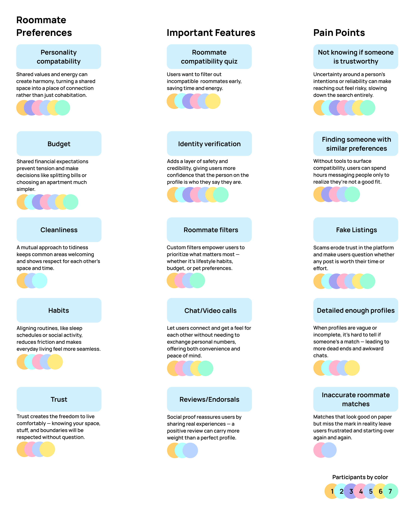
Qualitative
In addition, I conducted user interviews with 8 participants and found that the roommate search process is often stressful and time-consuming. Key struggles include a lack of personal connections with potential roommates and concerns about privacy and safety when using apps.
"It's stressful juggling everyday responsibilities and finding a suitable and trustworthy roommate."
- R
"I've had a negative experience with a roommate because it was someone I didn't know and we were not compatible"
- H
User Insights
Roommate selection is an emotional process
Finding a roommate is more than having matching budgets. Users want someone they can trust, feel comfortable around, and actually enjoy living with. The decision is personal because they're choosing someone who will be part of their everyday life.
Compatibility needs to be comprehensive
Users want to know how a potential roommate lives day to day. Cleanliness, routines, guests, social habits, and finances all play a role in whether two people will work well together.
The search process should be fast and intuitive
Scrolling through endless profiles can get overwhelming fast. Users want an easier way to find people who actually feel like a good fit.
Security comes before comfort
Trust is a major part of deciding whether to connect with a potential roommate. Users want reassurance that profiles are authentic and that the people behind them are legitimate.
Competitive Landscape
To ensure Nestly stands out in the competitive market, I conducted secondary research and analyzed existing roommate-matching platforms. By studying their strengths, weaknesses, and feature sets, I identified gaps in the market and opportunities to create a more comprehensive solution that prioritizes user trust, compatibility matching, and seamless experience.

Understanding the user
The research and user interviews gave me a better understanding of the current roommate solution landscape and the problems people face within it. I focused on turning those findings into concrete visualizations that would help me empathize with users, understand their needs, and define the experience Nestly should provide.
Persona Development
Based on my user insights I developed two personas: Brie, a college student seeking a quiet, affordable living space, and James, a divorced father looking for a trustworthy, family-friendly roommate. These personas helped me understand the unique challenges and goals of different types of potential users.


Empathy Map
To deeply understand user needs and emotions, I created an empathy map that explores what users think, feel, say, and do throughout the roommate search process.

User Journey
The user journey map visualizes the entire roommate search experience, from initial awareness through decision-making, highlighting key touchpoints, pain points, and opportunities for improvement.

Shaping the Solution
With user needs clearly defined, this phase was about translating those insights into an actual plan. I identified which features would directly address the problems users shared, looked at other apps for smart patterns worth adapting, and mapped out the structure Nestly would need to support it all.
Translating Needs into Features
Identity Verification
Insight: Users need to feel safe and have peace of mind that their potential roommate is a legitimate person who can be trusted.
Feature: Implemented a process where users can verify their identity through a government-issued ID or third-party verification services, increasing overall platform trustworthiness.
Compatibility Quizzes
Insight: Users want roommates who are compatible not just on rent or location, but on lifestyle, habits, and personal values.
Feature: Implemented a detailed compatibility quiz taken during profile creation, generating a compatibility score to match users who align best with their responses.
Endorsements/Reviews
Insight: Users want confidence in potential roommates, and knowing someone has lived successfully with others builds trust.
Feature: Implemented a feature where users can leave and receive reviews or endorsements from past roommates, visible before committing to a match.
Brainstorming: Inspiration
Hinge
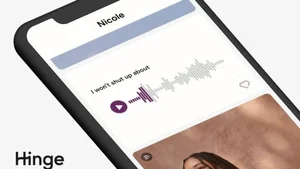
Hinge's fun profile prompts and audio feature offer a unique way for users to express personality and lifestyle. For a roommate app, this could help users get a better sense of compatibility, making it easier to find someone with similar habits and personalities.
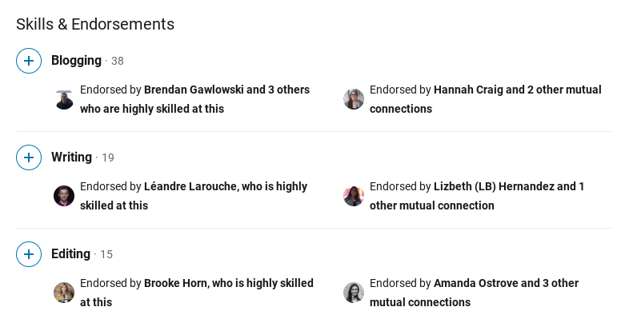
LinkedIn's endorsement system lets users vouch for each other's skills, building credibility within a professional network. This concept could be adapted by allowing users to endorse previous roommates for qualities like cleanliness, communication, or reliability.
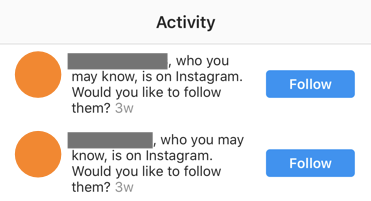
Instagram's "You Might Know" feature suggests users with mutual connections or similar networks. A similar feature could suggest potential roommates based on mutual friends, shared social circles, or common interests.
Information Architecture
Once I had a better understanding of my users, their wants and needs, and the key features I wanted to focus on, I moved on to information architecture mapping. The IA map helped me plan out the different user flows and figure out roughly how many screens I would need for each action or feature.

Sign Up Flow
I decided to dedicate a whole diagram to the sign-up flow because I saw it as an important part of creating a trustworthy user base. I needed to collect enough information to make the matching process effective, but I also didn't want the sign-up process to feel like too much work and cause users to quit. With the Doherty Threshold and user friction in mind, I focused on keeping each step simple and manageable while still collecting the information I needed and building trust from the beginning.

Prototyping & Testing
With the signup flow and IA map as my starting point, I began wireframing each screen at a medium-fidelity level. Along the way, I discovered several new features and fixes I hadn't considered until I actually started designing. Once the wireframes were in place, I ran usability testing to identify where users got stuck or confused in the flow.
Medium Fidelity Wireframes
To bring my ideas to life, I started by creating medium-fidelity wireframes. This helped me map out the app's core features, layout, and user flow without getting too caught up in visuals just yet.
Signup Flow
Nobody wants to spend hours messaging strangers only to find out one's a neat freak and the other's living in chaos. So, onboarding handles the basics: preferences, habits, basic information, ID check, and contact verification. This is meant to filter out the fake users and spam so that users can actually find a trustworthy, compatible match.

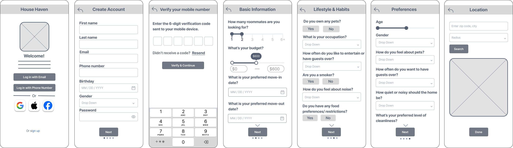
Match Flow
The match page gives users a quick snapshot of someone's profile, just enough to see if there's potential. If they're interested, they can tap in to view the full profile with more details like budget, compatibility preferences, and answered prompts. When two users match, they get a personalized summary highlighting what they have in common, making it easier to break the ice and start a conversation with context.

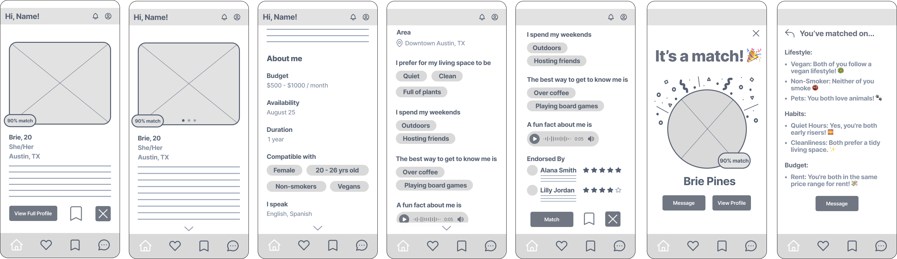
Profile Creation Flow
Profile creation focuses on helping users express their personality beyond a static headshot. Users can upload photos that reflect their lifestyle, write a short bio, respond to prompts, and indicate compatibility preferences. An optional voice note feature was also included, allowing tone and personality to come through in ways text alone cannot.

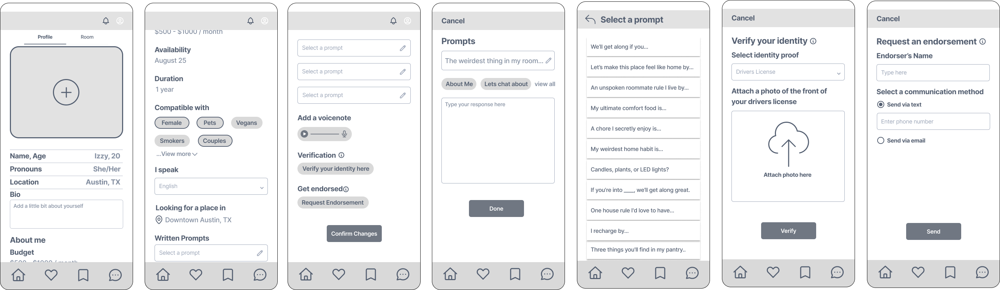
Room Creation Flow
I wanted this app to put people first, not just listings, so housing info lives right inside the user's profile instead of being its own separate thing. This section is for users who already have a place and just need someone to move in. They can add photos of the house or room, set the rent, list amenities, and cover any other must-knows.

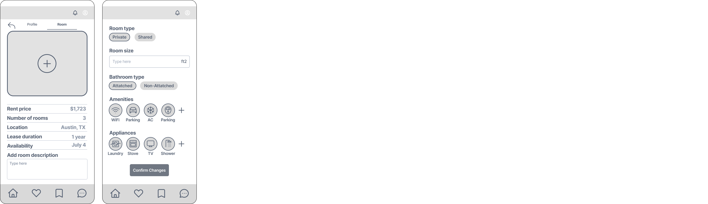
Main Navigation Flow
Roommate searching involves juggling a lot of people at different stages, someone you just matched with, someone you're still deciding on, someone you're actively messaging. Rather than bury that in menus, Home, Matches, Saved, and Messages sit in the main nav so users can move between stages without losing their place. Home covers discovery through swipe-style browsing, Matches and Saved separate real interest from maybes, and Messages is reserved for the conversations that actually determine compatibility.

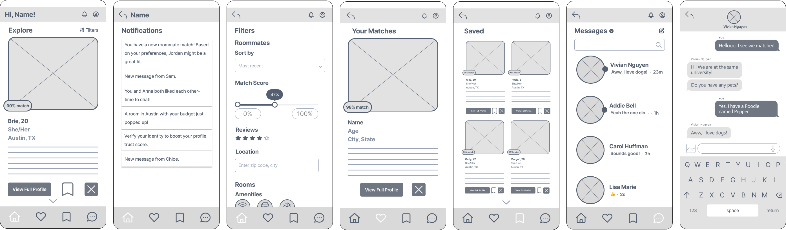
Usability Testing
To evaluate how intuitive the medium-fidelity wireframes were, I created a clickable Figma prototype and a task sheet with specific actions for participants to complete. During each session, I gave participants scenarios rather than explaining where to click, such as asking, “How would you save a match you’re unsure about?” I then observed where they clicked, what they expected to happen, and where they hesitated or became confused. This helped me identify usability issues that weren't immediately obvious from the wireframes alone.
Several flows weren't as intuitive as they seemed on paper
Based on testing with 10 participants, I found the following pain points:
Too Much At Once
Issue 01Participants felt overwhelmed by the amount of information shown right away when signing up.
Unclear Actions & Icons
Issue 02Older participants struggled to recognize icons on their own, so pairing icons with short text labels would make key actions clearer across age groups.
Home & Match Pages Looked Too Similar
Issue 03Participants had difficulty telling the Home and Match screens apart at a glance.
Missing Accessibility & Mental Health Considerations
Issue 04Some users, particularly those with disabilities, may want to find roommates with shared accessibility needs or mental health considerations.
Testing at the wireframe stage meant these fixes were cheap to make, before any visual design work had been invested.
Age came up more than expected as a factor in how intuitive icons and navigation felt, a pattern worth testing further with a larger group.
Additional Insights
Trust drives willingness to message
Having enough shared or compatible information made the participant feel comfortable enough to actually message someone, reinforcing the value of Nestly's existing trust features (verification, endorsements, compatibility quiz).
"Save" vs. "Match" depends on urgency
The participant explained they'd choose to save a profile versus match based on how urgently they needed a roommate, revealing that these two actions serve different intents.
Conversation starters would help
The participant expressed interest in built-in prompts to break the ice once matched.
Brand Identity
I started the visual exploration by thinking about what I wanted someone to feel when they first interacted with the UI. Since the product is centered around community and shared living, I wanted it to feel playful, welcoming, and trustworthy. I explored a few nature-inspired symbols that could represent community and shared living, especially bees and birds. Both felt like a good fit because of their social and cooperative nature, but I ultimately connected more with the idea of a bird and its home.

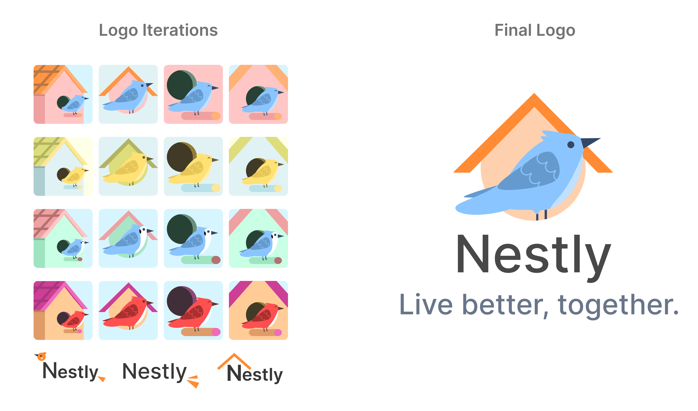
The final logo features a blue bird perched outside a birdhouse, which felt like a simple way to represent finding a place where you belong. I paired it with a soft orange palette to bring warmth and personality to the UI while still keeping the overall experience approachable and dependable.

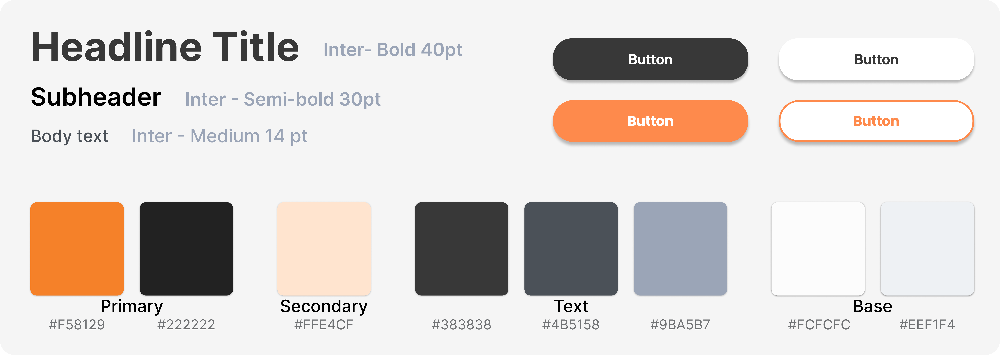
Final Screens
Here are the final polished screens showing the complete user experience from onboarding through profile creation and matching.

Key Design Outcomes
✓ Comprehensive Matching Algorithm
Created a detailed compatibility quiz system that goes beyond basic filters to assess lifestyle, habits, and values
✓ Trust-Building Features
Implemented identity verification, endorsement system, and user reviews to foster community safety
✓ Intuitive User Flow
Designed a seamless onboarding experience that guides users through profile creation, quizzes, and matching
✓ Accessible Design
Created a user-friendly interface with clear visual hierarchy and intuitive navigation for all user types